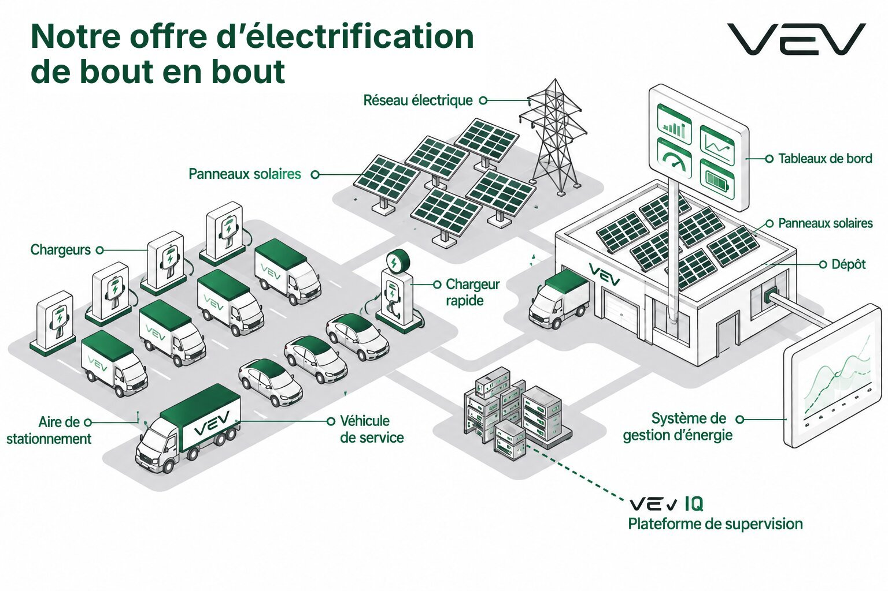
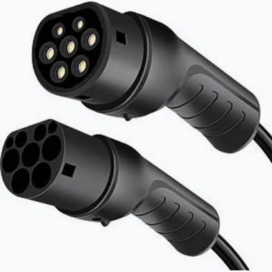
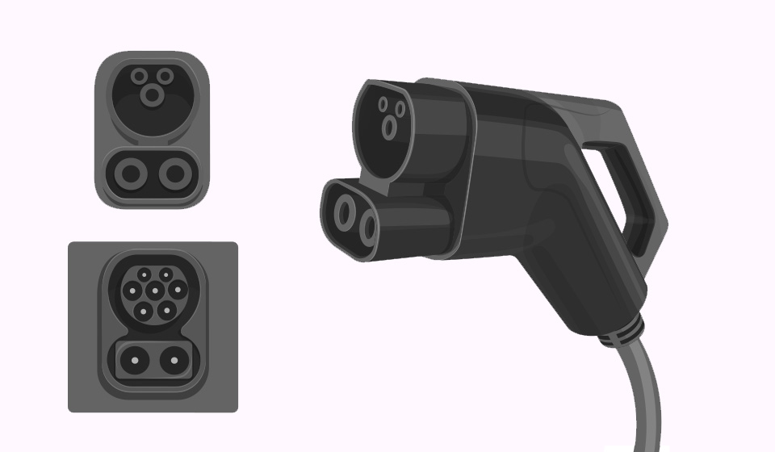

Lundi 23 novembre
- Mise en place des comptes : création de mon adresse mail VEV et de mon compte GitHub.
- Installation du poste de travail : installation de Linux Fedora 44 sur l’ordinateur qu’on m’a prêté. J’ai démarré depuis une clé USB en passant par le BIOS.
- Navigateur : installation de Google Chrome depuis la logithèque de Fedora (l’application « Logiciels »), qui permet d’installer des programmes sans passer par le terminal.
- Découverte de l’entreprise : VEV développe des logiciels de gestion pour la recharge de véhicules électriques. Ils permettent notamment de :
- localiser les bornes de recharge ;
- savoir qui les utilise et qui a le droit de les utiliser ;
- suivre la position des véhicules ;
- suivre l’énergie consommée par les batteries.
🖼️ Voir l’offre de VEV en image

L’offre d’électrification de bout en bout de VEV · Cliquer pour agrandir - Les types de bornes : j’ai découvert deux types de prises (clique dessus pour voir une photo) :
- la

Prise Type 2, en courant alternatif (AC) ; - le

Prise Combo CCS2, en courant continu (DC), plus puissant.
- la
- Atelier maquette : j’ai découpé des feuilles qui ont servi de base à une maquette, puis on les a scotchées sur une planche. J’ai ensuite coupé des bandes LED à la bonne longueur, et on m’a expliqué le rôle des différents composants.
📷 Voir la photo de la maquette
 Plan de la maquette, imprimé et scotché sur la planche · Cliquer pour agrandir
Plan de la maquette, imprimé et scotché sur la planche · Cliquer pour agrandir - Personnalisation de l’environnement : installation de l’extension GNOME Dash to Panel. Elle ajoute en bas de l’écran une barre des tâches comme sur Windows, avec les applications épinglées, les fenêtres ouvertes, l’horloge et les icônes système.